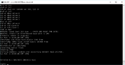

Saved from https://gunkies.org/wiki/4.1_BSD on 2026-11-24 (MediaWiki render view).
| 4.1 BSD | |
 Logging into a 4.1 BSD system | |
| Type: | Multitasking, multiuser |
|---|---|
| Creator: | CSRG |
| Architecture: | VAX, theoretically portable |
| This Version: | 4.1 (1981) |
| Date Released: | 1981 |
This version of BSD addressed many of the performance shortcomings in 4.0 BSD that were brought up in a VMS vs BSD paper. Many of the changes are outlined in Bug fixes and changes in 4.1bsd. One of the big points of 4.1 is that it supported the VAX-11/750, which became a workhorse favorite of the DoD, which in turn led to DARPA grants to the CSRG to continue developing BSD. The 4.1 BSD kernel was systematically tuned up by Bill Joy until it could perform as well as VMS on several benchmarks.
The release would have been called 5BSD, but after objections from AT&T the name was changed; AT&T feared confusion with AT&T's UNIX System V.
Other features included:
4.1 BSD, June 1981 4BSD was upgraded to include many performance improvements, support for a new VAX model and autoconfiguration.
Once DARPA was funding the development of BSD, it lead to 2 big improvements from 4.1 to 4.2: the adddition of TCP/IP, and the new BSD Fast File System. These were beta-released in three intermediate versions: 4.1a included BBN's preliminary TCP/IP implementation; 4.1b included the new FFS; and 4.1c was an interim release of what became 4.2 BSD, during the last few months of its development.
Apparently 4.1a includes the BBN TCP/IP stack, but on a 750, it only can perform at 56kb on Ethernet, and maximizes the CPU to 100%, whereas Bill Joy's TCP/IP could get upwards of 700k/sec.
A tape image for 4.1 has surfaced on bitsavers, named 4.1_BSD_19810710.zip The bootblock programs do not run under SIMH using the 4.0 BSD strategy, however it is possible to swap tapes when restoring the root slice, and then restoring the tars. Using this modified tape, I've created an installation guide Installing 4.1 BSD on SIMH.
There is two tape images on bitsavers 4.1C BSD 1 of 2, and 4.1C BSD 2 of 2. A much needed to revise guide is available Installing 4.1c BSD on SIMH.
These are what is available on the 1981 tape:
aardvark banner ching lib snake adventure bcd cribbage mille snscore advfiles bogdict fish monop trek arithmetic boggle fortune number wump backgammon chess hangman quiz zork
Bug fixes and changes in 4.1 BSD
4.1a This was a test release including TCP/IP and the socket interface. It saw a wide release, although it seems to have disappeared.
4.1b This was a test release, used only a Berkley and it includes the new Fast File System, using clustering for much improved performance, and contained the netw networking code.
4.1c 1982/1983 The third test release between 4.1BSD and 4.2BSD, it was distributed to about 100 sites and includes most 4.2 features except for the new signal facility. There is a detailed paper UNIX* System V and 4.1C BSD written by John Chambers & John Quarterman, that details 4.1c BSD.
| v • d • e UNIX Versions, Vendors and Related |
|---|
| Research Unix PDP-7 UNIX • V1 • V2 • V3 • V4 • V5 • V6 • V7 • V8 • V9 • V10 • LSX • MINI-UNIX • Unix/32V
AT&T and others - CB-UNIX • PWB/UNIX • USG UNIX • System III • System IV • System V • V7M • ULTRIX BSD - 1BSD • 2.9BSD • 2.10BSD • 2.11BSD • 3BSD • 4BSD • 4.1BSD • 4.2BSD • 4.3BSD • 4.4BSD BSD Descendants 386BSD • NetBSD • FreeBSD • OpenBSD • NeXTSTEP • Darwin |
| Other - xv6 • AMIX • SunOS • Solaris • A/UX • XENIX • AIX • Dell UNIX |